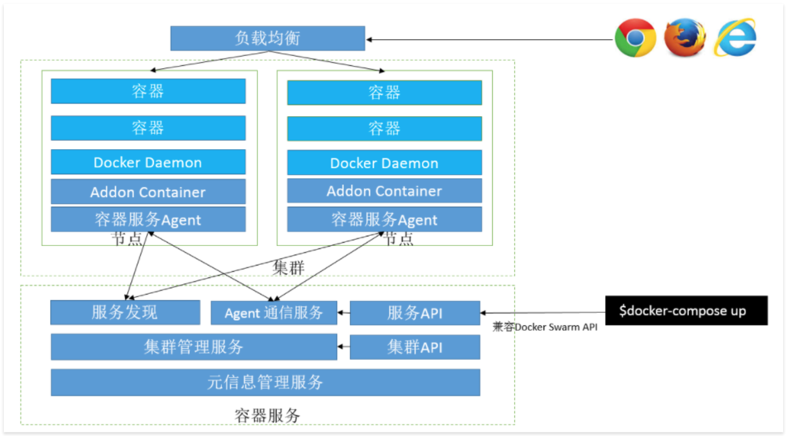

餐饮圈后端容器化实践
记录餐饮圈APP后端容器化技术选型，以及实践过程。
项目介绍
简单介绍一下餐饮圈项目规模，以及团队配置，用以作为技术选型和实践的参考条件。
餐饮圈介绍
餐饮圈是专注于餐饮行业社交，招聘的APP。 后端采用微服务的设计思想，将不同的业务放在不同服务中。 随着业务的发展，目前后端服务有20多个。
容器化之前，采用的是传统的负载均衡（阿里云负载均衡） + 多台服务器（阿里云ECS） + 数据库（阿里云RDS)模式。
团队规模介绍
研发团队3～5人，同时负责前端APP和后端的研发和运维。日常的开发流程采用敏捷开发的scrum方法。
一个简单的目标 — 不断提升生产力
__不断提升生产力__是促使团队尝试容器化后端的主要动力。 随着后端服务的增多，在服务管理方面投入的时间增多， 团队注意到用于发布，调试和监控服务的时间越来越多。 因为之前采用的是单一tomcat运行所有服务，导致每一个服务的变更都需要重启整个tomcat。 tomcat也占用了大量的服务器内存。
于是，列出了希望提升的几个点：
- 更简化的发布部署方法
- 更灵活管理服务对资源的使用
- 更高效的管理服务器资源，实现快速弹性伸缩
基于以上三点，团队开始考虑容器化后端，使用容器编排平台来管理服务。
注意：容器化后端，并不是解决上面问题的唯一选择。后来的实践中也渐渐体会到，容器化后端是很重大的决定，改变的是整个后端的基础架构。之所以没有过多犹豫就选择容器化方案，是因为团队内有人熟悉容器，而且现有后端基础架构相对简单。
第一张架构总览
项目后端在阿里云上，持久化存储用的全部是阿里云的服务。 数据库使用RDS， 图片等静态文件使用OSS， Redis使用云数据库Redis，所以容器化过程不存在应用服务器有持久化数据的问题， 只需要保证容器平台可以顺利链接阿里云服务器即可。
注：应用服务器无状态化是容器化之前很关键的点，如果应用服务器上存有数据，例如图片， 缓存等，需要先将这些数据转移到云平台的存储服务中， 可以参考12 Factor App篇文章。
下面是第一张架构总览， 简单的从逻辑层面描述了容器化后的后端架构。
可以看到容器编排平台是架构的核心，所以选择一个适合的容器编排平台是容器化后端的关键。
容器编排平台的选择
我们选择了三个容器编排平台作为备选方案：
- Docker Swarm
- Kubernetes
- Rancher
Docker Swarm作为Docker自家出品的容器编排服务，和Docker无缝连接，实施简单，学习曲线平滑，了解Docker使用的程序员可以很容掌握。而且，阿里云容器服务也采用了Docker Swarm作为基础。
Kubernetes, 很多大厂用它实现了PaaS服务， 在企业级解决方案中Kubernetes也经常被采用作为PaaS平台的基础，可以侧面体现出Kubernetes的可靠性，稳定性等优势。作为Google自家集群管理工具的开源版本，Kubernetes有很高的呼声。
Rancher相对于前两个选择，有着开箱即用的特性，提供了完整的UI控制台。在集群管理方面有多种选择，可以选择Kubernetes, Docker Swarm来做容器编排。 但是因为国内相关实践例子不多，很快就被从选项中去掉。
尝试阿里云容器服务 - Docker Swarm
第一个POC是在阿里云容器服务上做的，因为阿里云容器服务采用Docker Swarm基础， 而且提供了一套完成的UI控制界面。 借助官方提供的文档，一天内完成了三台服务器节点的测试集群搭建，并发布了几个测试服务。一切进行的很顺利。第二天，陆续将全部服务都部署上去，并开始性能和压力测试。
阿里云容器服务架构如下(来自官方文档)： 
第一个问题
在测试过程中，遇到了第一个问题，响应时间不稳定。 有些服务第一次请求响应时间在几千毫秒到几百毫秒波动， 并不稳定。
翻阅了路由部分的文档，找到了请求如何在平台内路由的示意图如下：
可以看到routing容器起到了服务发现和路由转发的作用， 负载之后所有请求都会经过routing容器。 容器内是HAProxy做请求转发。
因为请求经过负载，又经过routing容器，然后由虚拟网络层在集群内转发到提供服务的容器。 此过程，在请求到达服务容器之前都没有日志可以跟踪，始终无法知道延迟出现在哪一步。
再后来的实施中这个问题随着增加服务容器实例的个数得到缓解，但是始终没有找问题的根本原因（并不能排除应用层本身有的问题的可能）。
雪崩
压力测试过程中，集群出现了第一次雪崩，三个节点全部掉线，并且无法ssh登录。 调查雪崩原因有两个：
- 没有限制容器使用资源，导致容器过载后瞬间吃掉系统内存 （参考阿里云文档解决）
- Tomcat官方镜像并不能很准确的计算出JVM的最大使用内存是多少，导致服务容器过载后不断重启。（具体解决办法可参考这篇文章）
结论
优势
-
阿里云容器服务，提供了类似Rancher的开箱即用的特性，只需要将云服务器配置到集群中就可以自动完成集群的部署。 并且可以通过控制台界面，快速完成阿里云日志服务，云监控等功能的集成。 对于没有专门运维人员的小团队，能节省很多维护时间。
-
Docker Swarm作为基础架构，开发团队学习曲线平滑，只需要掌握docker基本知识就可以上手使用。
有待解决的问题
- 集群使用的etcd作为一个外部服务独立提供，对于用户不可见，也不可控。
- 请求链路不完全透明，链路跟踪有难度
- 技术支持需要在群里喊。 当然群里管理员很负责，阿里云工程师都很专业，问题基本可以很快解决。但感觉技术支持的流程还不是太规范。
尝试Kubernetes集群
虽然Kubernetes提供了在AWS等云上的部署的驱动，但是对于阿里云，目前并没有集成进去。 所以，我们参考了阿里云初扬写当 Kubernetes 遇到阿里云 之 快速部署1.6.1版本做POC。 对于刚刚接触Kubernetes的人来说，这很有挑战。
依然从三节点的测试集群开始，但马上遇到了虚拟网络层的问题， 在经典网络模式下始终无法在集群内联通虚拟网络。 几次尝试未果后，转移到VPC网络，成功建立了集群，并打通了虚拟网络。
集群成功运行 —— 只是个开始
经过两天的折腾，Kubernetes集群搭建完成。 但是还有很多东西需要完善， 控制台UI界面，服务发现，日志，监控。 很显然这些都不在Kubernetes的核心中。 所有都需要借助其他开源项目来搭建，需要投入更多的人力和时间去完善。 对于小团队来说，希望将Kubernetes用于微服务架构的生产环境，挑战很大。咨询过一些前辈后，了解到在Kubernetes上部署Spring Cloud是一个用于微服务的选择，但是并没有继续尝试。
结论
优势
Kubernetes优势很多，比如大厂都在用， 社区很活跃。 但我们最终并没有完整实践Kubernetes，所以没有办法谈对这些优势的体会。
对于小团队来说的挑战
- 阿里云上部署需要了解很多Kubernetes的基础组件，其中
虚拟网络层搭建挑战很大 - 如果希望用于生产环境，需要自行搭建高可用架构，并且搭建控制台，服务发现， 日志等应用。 （可以参考在阿里云上部署生产级别Kubernetes集群了解部署高可用集群的方法，但文章中也没有提到微服务相关的工具如何搭建）
- 微服务平台相关组件都需要自行部署和配置
选择 —— 阿里云容器服务
经过对两个平台的POC，我们最后选择了提供了更多工具的阿里云容器服务作为容器化后端的方案。
对于小团队来说，容器化是为了提高生产力，开始选择容器编排平台时，我们忽略了__微服务平台__这个概念，将容器编排平台等同于了微服务平台。 在POC阶段，逐渐认识到了两者的不同，微服务平台可以构建在容器编排平台之上，也可以直接在云服务器上部署。
选择阿里云容器服务，其实是选择了一套微服务平台，并不单单是Docker Swarm。
坚持容器化后端，也是因为基于Docker的DevOps可以不局限于某种后端技术，更灵活的隔离应用运行环境，和控制应用对资源的使用。
第二张 Architecture Overview
目前实施的架构总览
后记
在容器化后端过程中到我们底在选择什么
最初我们希望通过容器化后端架构来实现提高生产力这一目标。 在技术选型的开始阶段，“选择一个适合的容器编排平台”被定义为关键技术问题。 但随着POC的深入，只选择容器编排平台并不能解决提高生产力的目标，甚至容器编排平台本身并不能直接提高生产力，对于小团队来说反而需要投入更多的人力去维护。 我们认识到， 对于一个3～5人的小团队来说，我们更需要的是一套微服务治理平台，这个平台是建立在IT基础架构之上的应用平台。而容器编排平台更像是IT基础架构针对容器的一层抽象，并不能直接满足小团队提高生产力的目标。 下图大概说明了，应用，微服务平台，容器编排平台，IT基础架构的关系。
所以，在容器化后端技术选型的后半程，我们更多的考量的是__如何选择一个适合的微服务平台__。最后基于阿里云容器服务，实现了我们的后端容器化的第一阶段。 因为Docker Swarm和Docker的无缝连接， 开发团队并没有花费太多精力去学习新的概念，快速的将发布运维一系列工具迁移到了容器上。 在一个月之内，保证日常业务变更的前提下，完成了后端容器化，实现了提高生产力的目标。
还没做的事情
- 继续调研微服务平台
- 测试弹性伸缩